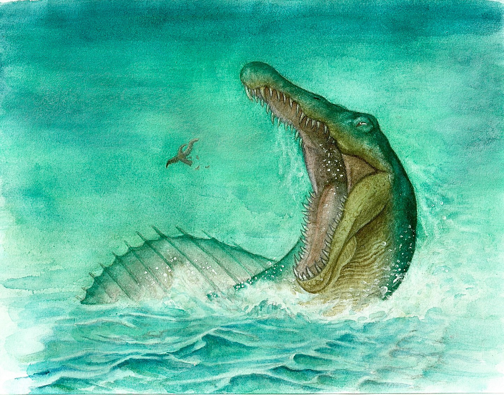

G
企画・ゲームデザイン・アートディレクション
Lane Frontierの発起人。 ゲームシステムの設計、カード案、 デザイン、イラスト、テストプレイなど、 制作の中心を担う。
01 / GAME SYSTEM
『Lane Frontier』は、 カードゲームの駆け引きと、 ボードゲームのような位置取りを組み合わせた 対戦型カードゲーム。
領土を開拓することで戦場を広げ、 モンスターを配置し、 戦場を進軍させながら相手の城を目指す。
どこに領土を広げるか。 どの道から攻めるか。 どのモンスターをどこへ送り込むか。
カードを使う順番だけではなく、 戦場全体の位置関係を考えながら 戦略を組み立てることが勝敗を左右する。
カードを操り、戦場を動かし、 自分だけの戦略で勝利をつかめ。

02 / WORLD
まだ誰のものでもない、 広大な未開の大地。
この世界では、 いくつもの勢力が自らの領土を求め、 未知の地へと歩みを進めている。
拠点となる城から新たな土地を切り拓き、 モンスターを率いて、さらにその先へ。
しかし、進み続けた先に待つのは、 同じく領土を求める別の勢力。
新たな土地を巡り、 互いの進路が交わったとき、 戦いが始まる。
どこへ進むか。
どこを守り、どこを攻めるか。
未開の大地に自らの領土を築き、 その勢力をさらに広げていく。
03 / CREATORS
Lane Frontierは、 3人の制作チームによって制作されている。
それぞれが異なる役割を担いながら、 ゲームシステム、ビジュアル、Web、ルール設計など、 作品全体を形にしている。
G
Lane Frontierの発起人。 ゲームシステムの設計、カード案、 デザイン、イラスト、テストプレイなど、 制作の中心を担う。
S
ゲームシステムの設計、カード案、 デザイン、イラスト、テストプレイなど、 企画初期から制作全般を担当。
T
Webサイトやルールブックの制作、 各種手続きや制作進行を担当。 ルールやシステムの整合性を確認しながら、 作品全体を整理・調整する。